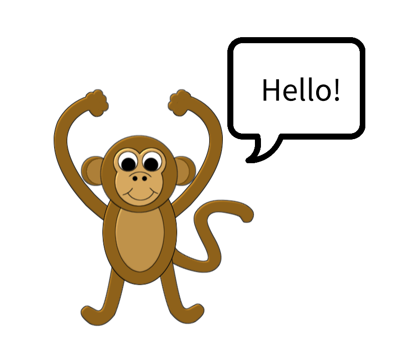

Banana Bytes
"Banana_Bytes" is a collaborative storytelling website where registered users can create stories and contribute to existing ones.
Users can start a story by providing a title and adding content of any length on a "create" page.
When contributing to a story on the "contribute" page, users can only see the most recent update by another user.
After submitting their contribution, users are restricted from adding to that story again, but can now read the full story on a "view" page.
Each user will have a personalized dashboard where they can view all the stories they have contributed to.
In addition, there is a "collection" page where users can see all existing story titles, and filter based on contribution status, modification date, and more."
